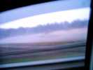
Berck, le super festival, 10 jours de cerf-volant ! Un temps pas toujours terrible, même que des fois il neige ! Sur la route, à l'aller, des bancs de brouillard pas très encourageants : c'est reparti pour une semaine de galère ?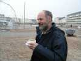
Hé ben, pas du tout, ce sera une année faste avec même un jour de Pâques idéal ! Pour l'instant, premier lever sur le parking des campings-cars. Bruno tient son petit café comme il peut, il a laissé de sa personne dans une machine à doigts... euh, non, à bois (dit-il) !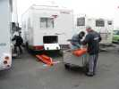
Les jardiniers préparent tout pour les jardins du V... C'est loin, il faut s'équiper en conséquence et les oublis se paient d'un km à pied !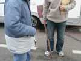
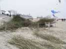
A l'autre bout, sur la plage un tas de branches de saule attend. Et pas un petit tas, 20000 branches issues des saulaies municipales et gracieusement déposées là. Y a plus qu'à !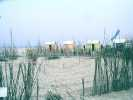
Les maîtres d'oeuvre sont les Ferment. Ils tracent, ils fédèrent, ils mobilisent... On creuse des tranchées, on plante (enfin, moi, je bosse une heure et après je vais voler... Eoliste, métier de fous). Au soir, le tour du labyrinthe, puisque c'en est un, est terminé.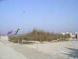
La grande question ensuite : combien de jours pour terminer ? Ca bosse dur et longtemps le dimanche, et le soir, c'est terminé ! Plus qu'un peu de finition le lendemain et c'est bon, ouf ! De l'extérieur, on ne voit qu'une pyramide un peu conique, et touffue.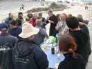
Bon, c'est fini, on a une semaine pour s'en remettre, il faut fêter ça ! Les bouteilles sortent de partout, il en restera encore trop le dernier jour !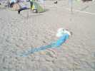
Je retourne au cerf-volant. Jean-Claude fait voler son papillon à fée, mais la fée est restée sur le sable, faute de vent....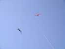
Moi, je sors mon Condor. Le soir plus personne, le vent se renforce, je déroule 200 m... mais quand je veux redescendre, une aile se replie et la bête, voyant qu'il n'y a plus personne sur la plage, se jette sur les éoliennes des Flics. Pas trop de casse, juste à démêler...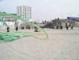
Le premier jour, je me suis installé devant le parking des camping-cars. Mais j'ai été menacé par des tentacules monstrueux qui voulaient emporter ma tente dans les azurs, alors j'ai déménagé vers les JdV, plus lointains mais plus accueillants.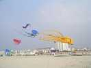
A part qu'il est dommage de consacrer un festival à un seul créateur-marchand, les pieuvres, c'est quand même une belle et spectaculaire invention, même si elles sont toujours pendues après des "pilotes", ce qui leur retire de facto la qualité de cerf-volant !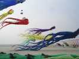
Mais un envol massif comme on en a vu (elles ne volent pas tous les jours, il leur faut leur vent...), c'est sacrément impressionnant, et encore plus, vu de près....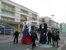
Sur la promenade, toujours du nouveau à voir. Les Géants du Nord se promènent tranquillement !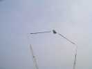
Le système d'éjection est très haut point et la verve des bonimenteurs ne connaît pas de limite...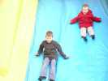
Les toboggans gonflables sont déployés pour la plus grande joie des enfants (et des parents qui voient quelquefois avec soulagement leurs enfants se défouler ailleurs que dans leurs jambes) !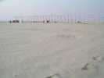
Hier et cette nuit, il a bien venté et la plage est redevenue presque vierge...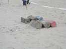
Il avait fallu tripler les attaches, pourtant des traverses de chemin de fer en acier et béton !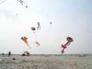
Mais ce matin, on peut déployer tout un petit zoo...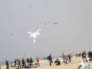
De plus en plus de gonflables, sur le festival. Il faut chercher les vrais cerfs-volants. Celui-ci est très joli et... aérien !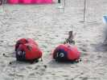
Jean-Claude a mis ses coccinelles à l'attelage...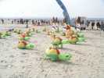
Et les tortues font ce qu'elles peuvent. Pour les voir se dresser sur leurs pattes, il faut quand même pas mal de vent...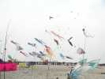
Là-bas, les pieuvres se sont réveillées, j'en compte 16 sur la photo. Ici, c'est plus calme. Les bols à trous-trous de la bande à Rolf tournent furieusement, et le papillon de Jean-Claude est au piquet...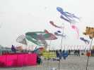
Derrière les pieuvres, le recordman du Koweït (17 818 km2 - le pays, pas le CV) s'est soulevé (le CV, pas le pays !), profitez-en, ce ne sera pas souvent !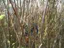
Dans le labyrinthe, la circulation est constante. Le milieu est plus dense que le bord, mais n'empêche pas de voir les autres pèlerins. Car ce labyrinthe ne comporte pas de choix, c'est un chemin mystique comme ceux des cathédrales, qui symbolise un pèlerinage (vers les idéaux du cervolisme, sans doute...)!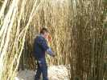
Pour les enfants, c'est très amusant, certains sont repassés 10 fois, mais ça ne les empêche pas de détruire un peu, il faudra constamment entretenir et reboucher les brèches...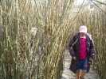
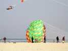
Sur la plage, toujours du vent de terre, turbulent. Les grands bols ont du mal à se gonfler et à décoller !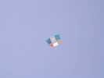
Christian a monté son Dopero modifié. Il faut le voir : il y a 2 petites dérives divergentes sous le centre à l'arrière. D'après lui, elles stabilisent la bête, ce qui est primordial pour l'aérophoto.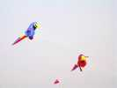
On voit aussi des perroquets géants et colorés posés sur une ligne...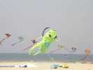
Devant une arche amusante, une espèce de grillon vert essaie mal de se maintenir en l'air...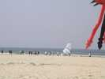
Plus loin, une sorte de kayak à voiles carrées n'a pas plus de succès...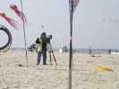
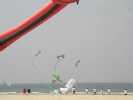
Les 4-ligneurs mettent au point une sorte de dragon ou de bonhomme pilotable. Le corps est un monofil, les membres et la tête sont positionnés par des révos modifiés... Ca marche, mais il faudrait améliorer encore l'aspect, et prévoir une chorégraphie adaptée.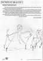
Je suis quand même content de voir se réaliser cette idée intéressante lancée dans le Lucane du CVCF il y a plus de 10 ans, mais jamais concrétisée...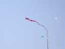
Une sorte de Jangyang moderne traîne sa longue queue, pendant que le monofil gonflable de Peter Lynn (enfin un vrai cerf-volant) montre une stabilité exemplaire...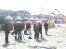
Gérard est venu donner un coup de main à Christian Bécot pour ses prises de vue, geste peu courant ! Ah, j'avais pas vu, il y a une caméra !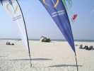
Les gonflables ne font même plus semblant d'essayer de voler. Ce pingouin se vautre dans le sable sans vergogne...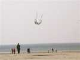
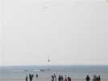
A force de se mélanger, il arrive que les CVs se coupent, ou arrachent leur piquet. Le vent de terre n'est pas bon, entre autres, pour la direction prise... Heureusement, il y a des bateaux pour rattraper ça, car un cerf-volant en l'air et un dans l'eau, ça ne tombe pas avant l'Amérique !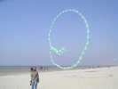
Amusant encore, ce grand serpent qui tournait à grande vitesse, avec un peu d'instabilité entraînant des emmêlages complexes...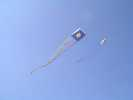
Des flow-forms gigantesques traînent des queues encore plus gigantesques... Ca doit demander des moyens importants et des équipes idem !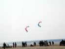
Les 4-lignes ne se reposent pas sur leurs lauriers, témoins ces clowns courbes qui font de la voltige ensemble... !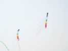
On revoit aussi avec plaisir ces trains arc-en-ciel de pilotables et leurs longs rubans qui emplissent l'espace. Le show n'est pas toujours facile, car quand ça commence à se mélanger, le show est fini pour les intéressés...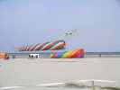
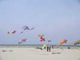
Rolf a sorti son bestiaire qui ne comprend pas que des bêtes mais aussi pas mal d'avions gonflables et pilotables, mais qui se tiennent bien, attachés à une arche...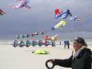
Jean-Claude vole toujours, devant ces bizarres manches à air en forme de diabolos entassés et les avions de Rolf et sa bande...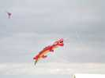
Un nouveau venu, un moloch très épineux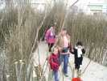
Dans le labyrinthe, les visiteurs circulent toujours... et ont toujours l'air ravis !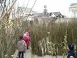
Quand on arrive à ce point très extérieur, on a l'impression d'être à la sortie. En fait, on n'a pas fait la moitié, on va repiquer vers le centre !